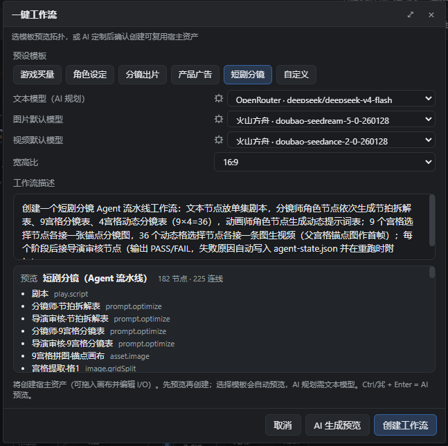
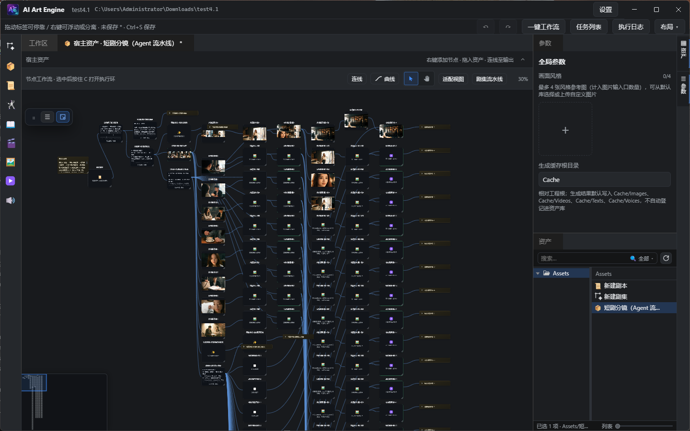
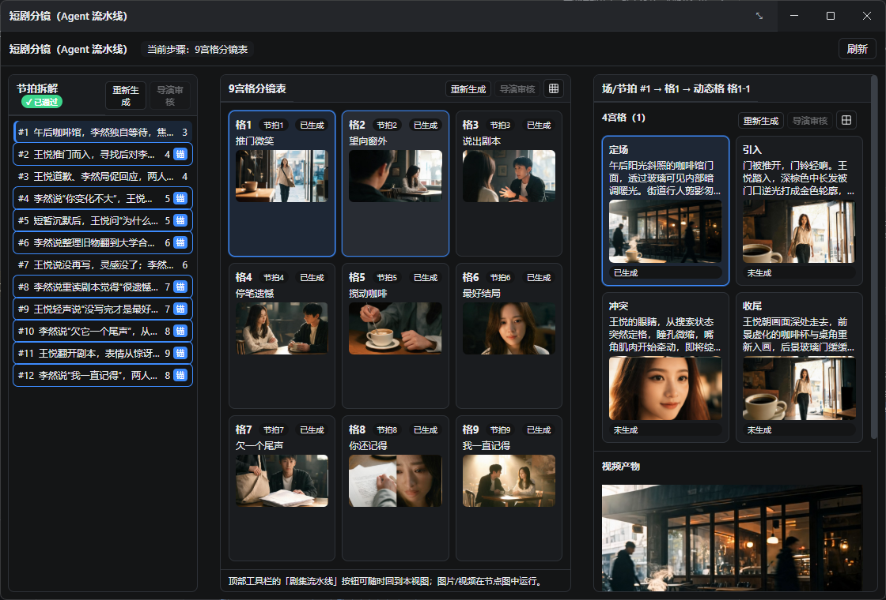

Guide · Short Drama
Short-Drama Guide
Produce a short video in three steps: let One-Click Workflow build the full node graph from the short-video template, then complete storyboards, tiling, director review and video generation inside the Agent pipeline window — no manual node wiring required.
1. Preparation
- Models: Settings → Models → add and enable a provider (Volcengine Ark, Kling, MiniMax, Tongyi Qianwen, ModelScope, OpenRouter, …). Select and set defaults for the text model (storyboard / prompts / review), the image model (tiling and anchor images) and the video model (motion video).
- Object storage (optional): Settings → Object Storage → enable one of Volcengine TOS / Alibaba Cloud OSS / Tencent Cloud COS. Recommended when videos need public URLs or are used as reference videos; you can skip it for local preview only.
- Create or open a project from the home page and enter the workspace.
2. Step 1: Pick the short-video template
- With the project open, click One-Click Workflow in the top bar.
- In preset templates choose “Short-drama storyboard (Agent pipeline)” — the short-video template.
- Click Preview template to inspect the generated nodes and links; you can pick a preset first and then edit the “workflow description”.
- Confirm with Create workflow, then choose a save directory and name.
- A new host asset appears in the asset library — the short-video workflow is ready.

3. Step 2: Auto-generated workflow nodes
Double-click the host asset to dive into the inner graph and see the chain the template built:
- Script → Beat breakdown table (storyboard artist) → 9-grid storyboard table.
- 9-grid tiling: one node renders the whole 3×3 sheet, then splits it into 9 anchor images and upscales them.
- 4-grid motion storyboard table → one 2×2 sheet per group → 36 motion cells extracted and upscaled.
- Motion prompt table (36 entries) → motion cell select → 36 motion videos.
- Four director review nodes (review1~review4) are interleaved throughout (beats / 9-grid / 4-grid / motion prompts).
The graph stays fully editable: change prompts, swap models, rewire edges. In daily use you never need to run nodes one by one — jump straight to the Agent pipeline window in step 3.

4. Step 3: Finish everything in the Agent pipeline
Click “Episode Pipeline” in the top toolbar to open the Agent pipeline window — every generation and review step happens here:
- Beat breakdown (left column): run Regenerate to produce the beat table, then click Director review.
- 9-grid storyboard table (center): run Regenerate for the 9-grid text; click the grid icon at the top-right to generate the whole 3×3 sheet and split out all 9 cells in one go; then Director review.
- 4-grid (right column): run Regenerate; click the 2×2 grid icon to generate the current group's 2×2 sheet; Director review. Motion prompts and video outputs are shown on the right.
- Video: click Generate this video (or generate entries one by one) and preview playback directly inside the window.
- Drag the dividers between the three columns to resize them, so you can watch text and images side by side.

5. FAQ
- Which models are required? A text model is mandatory (storyboard / prompts / director review); the image model renders tiling and anchor images; the video model renders motion videos. Enable and set defaults for each under Settings → Models.
- The video only shows a file path, no preview? Once generation finishes, the pipeline window loads a playable preview automatically; if it still doesn't appear, click refresh or reopen the pipeline window.
- The director review button is greyed out? It lights up only after the matching stage's Regenerate writes results back, so you never review stale content.
- Generation failed? Check the model key, default models and account balance first; the failure reason appears in the task queue or at the top of the window.